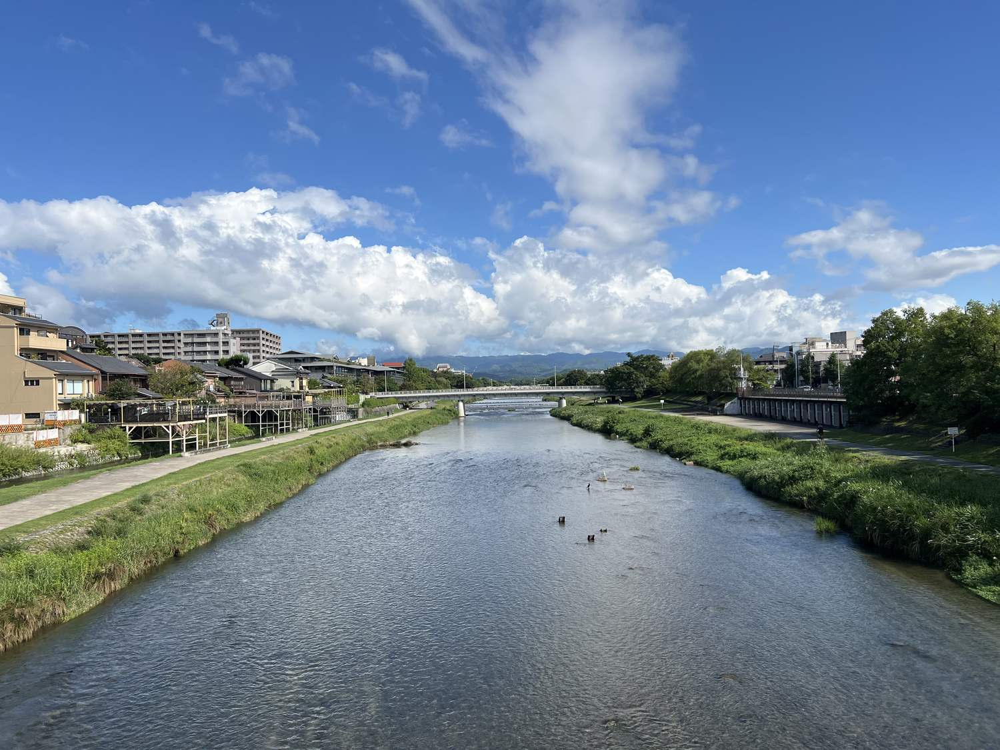

京都で生まれ育った人間は、鴨川に「行く」とはあまり言いません。「歩く」「渡る」「座る」と言う。目的地ではなく、通り道であり、居間だからです。買い物の帰りに座り、電話をしに降り、夏は涼みに行く。観光の予定表に入れる場所ではなく、予定と予定のあいだにある場所です。
私は24歳まで京都にいて、仕事で6年離れ、30歳で帰ってきました。街はずいぶん変わっていましたが、川だけは同じ速さで流れていた。変わったのは、河原に座っている人の言葉が増えたことです。
誰も決めていないのに、等間隔になる
夕方の鴨川に降りると、すぐ気づくことがあります。土手に腰かけている人たちの間隔が、驚くほど均等なのです。カップル、学生、ひとりで本を読む人。誰も測っていないし、案内板もない。それでも、だいたい同じ距離が空く。
京都では昔から「鴨川等間隔の法則」と呼ばれて、半分冗談のように語られてきました。仕組みは単純で、先に座っている人がいると、人は無意識に「近すぎない距離」を選ぶ。それが連鎖して、結果的に等間隔になる。誰も指示していないのに、全員が同じルールに従っている。
この川は、そういうふうにできています。ゴミ箱はほとんどありませんが、河原は比較的きれいです。飛び石を渡るとき、向こうから人が来ていれば、どちらからともなく片側に寄る。書かれたルールはほとんどないのに、運用されている。

同じ川を、二つの高さで使う
写真の左側、建物から川に向かって張り出している板張りが納涼床（のうりょうゆか）です。鴨川の西岸、二条から五条のあいだに、料亭から中華料理店、カフェ、バーまで、およそ90軒が床を組みます。2026年は5月1日から10月15日まで。桃山時代に始まったと伝えられる、ずいぶん古い習慣です。
おもしろいのは、床が河原そのものではなく、店から張り出している点です。だから床の上で食事をする人はお金を払い、その数メートル下の河原を歩く人は一円も払わない。同じ川を、同じ時間に、二つの高さで共有している。上を見上げれば人が食事をしていて、下では学生が座って喋っている。どちらも間違っていません。
京都の街は、こういう「重なり」でできています。観光の京都と、暮らしの京都は、別の場所にあるのではなく、同じ場所の別の高さにある。
書かれていないルールが、機能している場所
私たちが店舗のインバウンド対応を手伝おうと考えたきっかけは、ある銭湯で見た光景でした。英語の注意書きはちゃんと貼ってある。それでも外国人のお客さんは、脱衣所で止まってしまった。
理由ははっきりしています。日本人が誰にも説明されずに覚えたことは、貼り紙一枚では伝わらない。服をどこで脱ぐか、体をどこで洗うか、タオルを湯に入れないこと。順番があるのに、貼り紙には順番が書かれていない。
鴨川の等間隔は、書かれていないルールがうまく機能している例です。見ればわかるから、誰でも真似できる。銭湯の脱衣所は、書かれていないルールが機能しなくなった例です。見てもわからないから、真似できない。
京都で起きている困りごとの多くは、この差でできています。悪意でも、language barrier そのものでもない。手順が、どこにも書かれていないだけです。
川は、行列を作らない
京都が混んでいると言われるとき、実際に混んでいるのはいつも同じ数か所です。清水寺周辺、伏見稲荷の千本鳥居、嵐山の渡月橋、錦市場。写真になる場所に、人が集まる。
鴨川はその逆で、長さで人を薄める装置です。三条から出町柳まで歩けば3キロ近くあり、どれだけ人がいても、座る場所がなくなることはまずない。行列ができないので、待ち時間もゼロです。
もし京都に来て、予定が一つ崩れたら——お寺の拝観に間に合わなかったとか、店が満席だったとか——そのときは川に降りてください。京都でいちばん失敗しにくい30分がそこにあります。
実用情報
- 料金
- 河原・遊歩道は無料。24時間出入り自由で、閉門はありません。
- 納涼床
- 2026年は5月1日〜10月15日。西岸の二条〜五条に約90軒。店ごとに期間・予約方法が違うので、各店の案内を確認してください。
- トイレ
- 河原には少ないので、橋の上に一度あがって周辺の施設を使うのが確実です。
- ゴミ
- ゴミ箱はほぼありません。持ち帰りが前提です。
- 安全
- 大雨のあと、鴨川の水位は驚くほど速く上がります。濁っている・流れが速い・飛び石が水に隠れている、のいずれかなら河原に降りないでください。晴れていても、上流で降っていれば増水します。
- 飛び石
- 濡れているとよく滑ります。荷物を持って渡らないほうが安全です。
シリーズ 京都を通る水
- 01鴨川は等間隔になるいま読んでいる記事
- 021895年生まれの「平安」平安神宮は、平安時代のものではない
- 03寺を突っ切る水道橋南禅寺の境内を、明治のレンガが横切っている理由